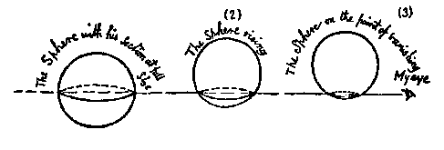

As soon as the sound of the Peace-cry of my departing Wife had died away, I began to approach the Stranger with the intention of taking a nearer view and of bidding him be seated: but his appearance struck me dumb and motionless with astonishment. Without the slightest symptoms of angularity he nevertheless varied every instant with gradations of size and brightness scarcely possible for any Figure within the scope of my experience. The thought flashed across me that I might have before me a burglar or cut- throat, some monstrous Irregular Isosceles, who, by feigning the voice of a Circle, had obtained admission somehow into the house, and was now preparing to stab me with his acute angle.
In a sitting-room, the absence of Fog (and the season happened to be remarkably dry), made it difficult for me to trust to Sight Recognition, especially at the short distance at which I was standing. Desperate with fear, I rushed forward with an unceremonious, "You must permit me, Sir — " and felt him. My Wife was right. There was not the trace of an angle, not the slightest roughness or inequality: never in my life had I met with a more perfect Circle. He remained motionless while I walked round him, beginning from his eye and returning to it again. Circular he was throughout, a perfectly satisfactory Circle; there could not be a doubt of it. Then followed a dialogue, which I will endeavour to set down as near as I can recollect it, omitting only some of my profuse apologies — for I was covered with shame and humiliation that I, a Square, should have been guilty of the impertinence of feeling a Circle. It was commenced by the Stranger with some impatience at the lengthiness of my introductory process.
Stranger. Have you felt me enough by this time? Are you not introduced to me yet?
I. Most illustrious Sir, excuse my awkwardness, which arises not from ignorance of the usages of polite society, but from a little surprise and nervousness, consequent on this somewhat unexpected visit. And I beseech you to reveal my indiscretion to no one, and especially not to my Wife. But before your Lordship enters into further communications, would he deign to satisfy the curiosity of one who would gladly know whence his Visitor came?
Stranger. From Space, from Space, Sir: whence else?
I. Pardon me, my Lord, but is not your Lordship already in Space, your Lordship and his humble servant, even at this moment?
Stranger. Pooh! what do you know of Space? Define Space.
I. Space, my Lord, is height and breadth indefinitely prolonged. Stranger. Exactly: you see you do not even know what Space is. You think it is of Two Dimensions only; but I have come to announce to you a Third — height, breadth, and length.
I. Your Lordship is pleased to be merry. We also speak of length and height, or breadth and thickness, thus denoting Two Dimensions by four names.
Stranger. But I mean not only three names, but Three Dimensions.
I. Would your Lordship indicate or explain to me in what direction is the Third Dimension, unknown to me?
Stranger. I came from it. It is up above and down below.
I. My Lord means seemingly that it is Northward and Southward.
Stranger. I mean nothing of the kind. I mean a direction in which you cannot look, because you have no eye in your side.
I. Pardon me, my Lord, a moment's inspection will convince your Lordship that I have a perfect luminary at the juncture of two of my sides.
Stranger. Yes: but in order to see into Space you ought to have an eye, not on your Perimeter, but on your side, that is, on what you would probably call your inside; but we in Spaceland should call it your side.
I. An eye in my inside! An eye in my stomach! Your Lordship Jests.
Stranger. I am in no jesting humour. I tell you that I come from Space, or, since you will not understand what Space means, from the Land of Three Dimensions whence I but lately looked down upon your Plane which you call Space forsooth. From that position of advantage I discerned all that you speak of as solid (by which you mean "enclosed on four sides"), your houses, your churches, your very chests and safes, yes even your insides and stomachs, all lying open and exposed to my view.
I. Such assertions are easily made, my Lord.
Stranger. But not easily proved, you mean. But I mean to prove mine. When I descended here, I saw your four Sons, the Pentagons, each in his apartment, and your two Grandsons the Hexagons; I saw your youngest Hexagon remain a while with you and then retire to his room, leaving you and your Wife alone. I saw your Isosceles servants, three in number, in the kitchen at supper, and the little Page in the scullery. Then I came here, and how do you think I came?
I. Through the roof, I suppose.
Stranger. Not so. Your roof, as you know very well, has been recently repaired, and has no aperture by which even a Woman could penetrate. I tell you I come from Space. Are you not convinced by what I have told you of your children and household?
I. Your Lordship must be aware that such facts touching the belongings of his humble servant might be easily ascertained by any one in the neighbourhood possessing your Lordship's ample means of obtaining information.
Stranger. (To himself.) What must I do? Stay; one more argument suggests itself to me. When you see a Straight Line — your wife, for example — how many Dimensions do you attribute to her?
I. Your Lordship would treat me as if I were one of the vulgar who, being ignorant of Mathematics, suppose that a Woman is really a Straight Line, and only of One Dimension. No, no, my Lord; we Squares are better advised, and are as well aware as your Lordship that a Woman, though popularly called a Straight Line, is, really and scientifically, a very thin Parallelogram, possessing Two Dimensions, like the rest of us, viz., length and breadth (or thickness).
Stranger. But the very fact that a Line is visible implies that it possesses yet another Dimension.
I. My Lord, I have just acknowledged that a Woman is broad as well as long. We see her length, we infer her breadth; which, though very slight, is capable of measurement.
Stranger. You do not understand me. I mean that when you see a Woman, you ought — besides inferring her breadth — to see her length, and to see what we call her height; although that last Dimension is infinitesimal in your country. If a Line were mere length without "height," it would cease to occupy Space and would become invisible. Surely you must recognize this?
I. I must indeed confess that I do not in the least understand your Lordship. When we in Flatland see a Line, we see length and brightness. If the brightness disappears, the Line is extinguished, and, as you say, ceases to occupy Space. But am I to suppose that your Lordship gives to brightness the title of a Dimension, and that what we call "bright" you call "high"?
Stranger. No, indeed. By "height" I mean a Dimension like your length: only, with you, "height" is not so easily perceptible, being extremely small.
I. My Lord, your assertion is easily put to the test. You say I have a Third Dimension, which you call "height." Now, Dimension implies direction and measurement. Do but measure my "height," or merely indicate to me the direction in which my "height" extends, and I will become your convert. Otherwise, your Lordship's own understanding must hold me excused.
Stranger. (To himself.) I can do neither. How shall I convince him? Surely a plain statement of facts followed by ocular demonstration ought to suffice. — Now, Sir; listen to me.
You are living on a Plane. What you style Flatland is the vast level surface of what I may call a fluid, on, or in, the top of which you and your countrymen move about, without rising above it or falling below it.
I am not a plane Figure, but a Solid. You call me a Circle; but in reality I am not a Circle, but an infinite number of Circles, of size varying from a Point to a Circle of thirteen inches in diameter, one placed on the top of the other. When I cut through your plane as I am now doing, I make in your plane a section which you, very rightly, call a Circle. For even a Sphere — which is my proper name in my own country — if he manifest himself at all to an inhabitant of Flatland — must needs manifest himself as a Circle.
Do you not remember — for I, who see all things, discerned last night the phantasmal vision of Lineland written upon your brain — do you not remember, I say, how, when you entered the realm of Lineland, you were compelled to manifest yourself to the King, not as a Square, but as a Line, because that Linear Realm had not Dimensions enough to represent the whole of you, but only a slice or section of you? In precisely the same way, your country of Two Dimensions is not spacious enough to represent me, a being of Three, but can only exhibit a slice or section of me, which is what you call a Circle.
The diminished brightness of your eye indicates incredulity. But now prepare to receive proof positive of the truth of my assertions. You cannot indeed see more than one of my sections, or Circles, at a time; for you have no power to raise your eye out of the plane of Flatland; but you can at least see that, as I rise in Space, so my sections become smaller. See now, I will rise; and the effect upon your eye will be that my Circle will become smaller and smaller till it dwindles to a point and finally vanishes.

There was no "rising" that I could see; but he diminished and finally vanished. I winked once or twice to make sure that I was not dreaming. But it was no dream. For from the depths of nowhere came forth a hollow voice — close to my heart it seemed — "Am I quite gone? Are you convinced now? Well, now I will gradually return to Flatland and you shall see my section become larger and larger."
Every reader in Spaceland will easily understand that my mysterious Guest was speaking the language of truth and even of simplicity. But to me, proficient though I was in Flatland Mathematics, it was by no means a simple matter. The rough diagram given above will make it clear to any Spaceland child that the Sphere, ascending in the three positions indicated there, must needs have manifested himself to me, or to any Flatlander, as a Circle, at first of full size, then small, and at last very small indeed, approaching to a Point. But to me, although I saw the facts before me, the causes were as dark as ever. All that I could comprehend was, that the Circle had made himself smaller and vanished, and that he had now reappeared and was rapidly making himself larger.
When he regained his original size, he heaved a deep sigh; for he perceived by my silence that I had altogether failed to comprehend him. And indeed I was now inclining to the belief that he must be no Circle at all, but some extremely clever juggler; or else that the old wives' tales were true, and that after all there were such people as Enchanters and Magicians.
After a long pause he muttered to himself, "One resource alone remains, if I am not to resort to action. I must try the method of Analogy." Then followed a still longer silence, after which he continued our dialogue.
Sphere. Tell me, Mr. Mathematician; if a Point moves Northward, and leaves a luminous wake, what name would you give to the wake?
I. A straight Line.
Sphere. And a straight Line has how many extremities?
I. Two.
Sphere. Now conceive the Northward straight Line moving parallel to itself, East and West, so that every point in it leaves behind it the wake of a straight Line. What name will you give to the Figure thereby formed? We will suppose that it moves through a distance equal to the original straight Line. — What name, I say?
I. A Square.
Sphere. And how many sides has a Square? How many angles?
I. Four sides and four angles.
Sphere. Now stretch your imagination a little, and conceive a Square in Flatland, moving parallel to itself upward.
I. What? Northward?
Sphere. No, not Northward; upward; out of Flatland altogether.
If it moved Northward, the Southern points in the Square would have to move through the positions previously occupied by the Northern points. But that is not my meaning.
I mean that every Point in you — for you are a Square and will serve the purpose of my illustration — every Point in you, that is to say in what you call your inside, is to pass upwards through Space in such a way that no Point shall pass through the position previously occupied by any other Point; but each Point shall describe a straight Line of its own. This is all in accordance with Analogy; surely it must be clear to you.
Restraining my impatience — for I was now under a strong temptation to rush blindly at my Visitor and to precipitate him into Space, or out of Flatland, anywhere, so that I could get rid of him — I replied: -
"And what may be the nature of the Figure which I am to shape out by this motion which you are pleased to denote by the word 'upward'? I presume it is describable in the language of Flatland . "
Sphere. Oh, certainly. It is all plain and simple, and in strict accordance with Analogy — only, by the way, you must not speak of the result as being a Figure, but as a Solid. But I will describe it to you. Or rather not I, but Analogy.
We began with a single Point, which of course — being itself a Point — has only one terminal Point.
One Point produces a Line with two terminal Points.
One Line produces a Square with four terminal Points.
Now you can give yourself the answer to your own question: 1, 2. 4, are evidently in Geometrical Progression. What is the next number?
I. Eight.
Sphere. Exactly. The one Square produces a Something-which- you-do-not-as-yet-know-a-name-for-But-which-we-call-a-Cube with eight terminal Points. Now are you convinced?
I. And has this Creature sides, as well as angles or what you call "terminal Points"?
Sphere. Of course; and all according to Analogy. But, by the way, not what you call sides, but what we call sides. You would call them solids.
I. And how many solids or sides will appertain to this Being whom I am to generate by the motion of my inside in an "upward" direction, and whom you call a Cube?
Sphere. How can you ask? And you a mathematician! The side of anything is always, if I may so say, one Dimension behind the thing. Consequently, as there is no Dimension behind a Point, a Point has 0 sides; a Line, if I may say, has 2 sides (for the Points of a line may be called by courtesy, its sides); a Square has 4 sides; 0, 2, 4; what Progression do you call that?
I. Arithmetical.
Sphere. And what is the next number?
I. Six.
Sphere. Exactly. Then you see you have answered your own question. The Cube which you will generate will be bounded by six sides, that is to say, six of your insides. You see it all now, eh?
"Monster," I shrieked, "be thou juggler, enchanter, dream, or devil, no more will I endure thy mockeries. Either thou or I must perish." And saying these words I precipitated myself upon him.
Next: Chapter 17